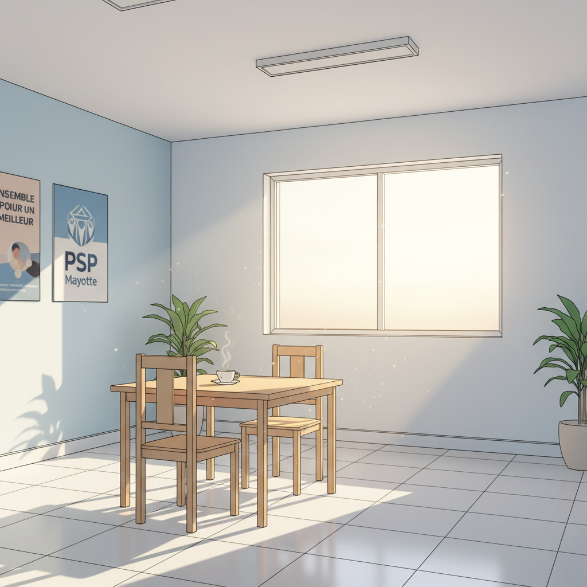
"Le Centre d'Accueil PSP Mayotte. Là où les histoires peuvent recommencer."
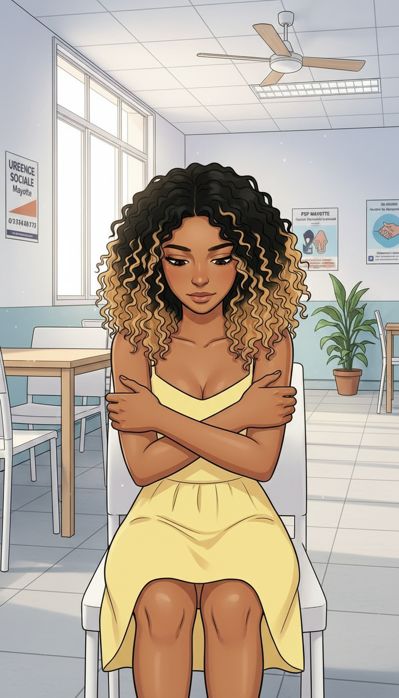
"Les premières heures. Je m'attendais à ce qu'on me demande quelque chose en échange. Je ne savais plus comment faire confiance."
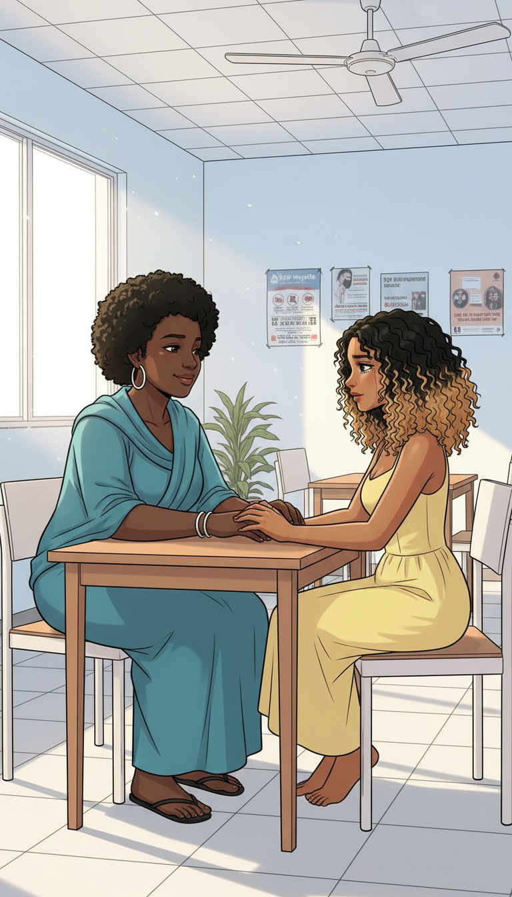
"Aïcha ne posait pas de questions. Elle était juste là. Présente. Ça m'a pris du temps pour comprendre que c'est ça, la vraie aide."
Tu n'es plus toute seule maintenant.
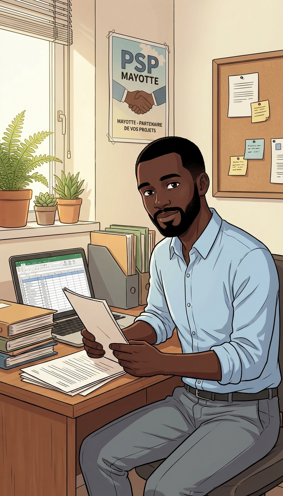
"Les papiers. Les démarches. Une nouvelle identité légale, construite brique par brique. Pour la première fois, quelqu'un travaillait pour moi — et non sur moi."
On va commencer par établir ta situation. Étape par étape.
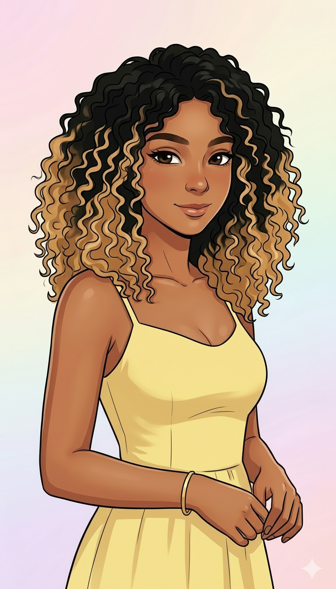
"Jour 12. Je me suis souri dans un miroir. Pas longtemps. Mais c'était moi."
heh...
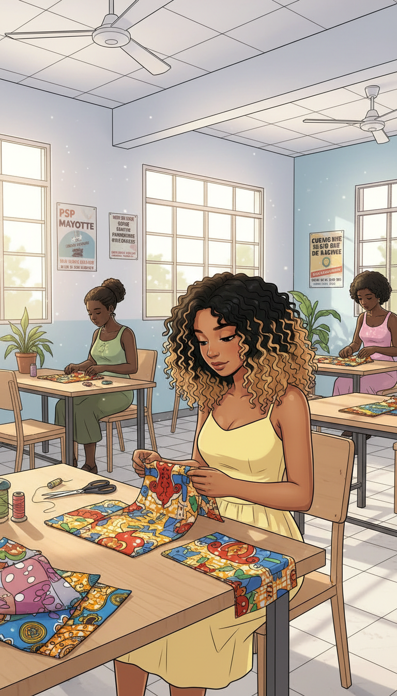
"Les ateliers. Les mains occupées. Réapprendre que mon corps m'appartient. Que le temps peut être doux."
SSHHH
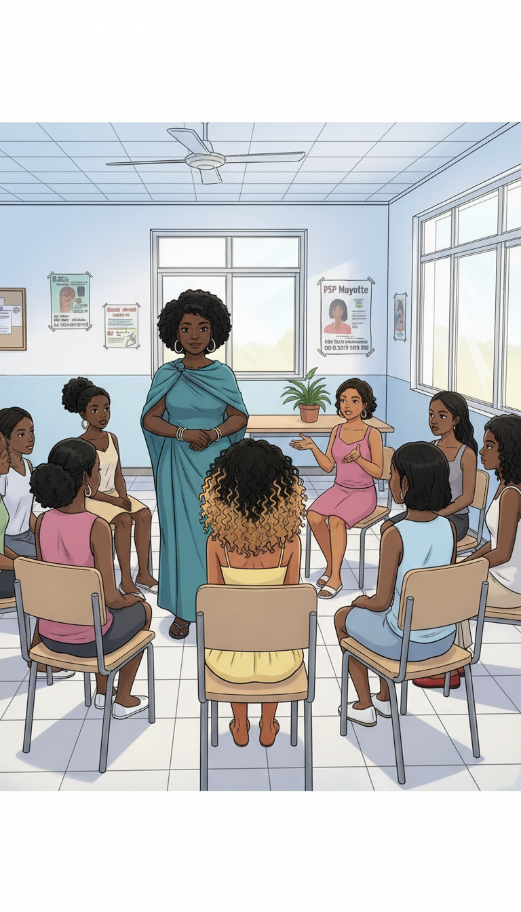
"Je n'avais pas encore parlé. Mais j'écoutais les autres. Et parfois, savoir qu'on n'est pas seule... ça suffit à respirer."
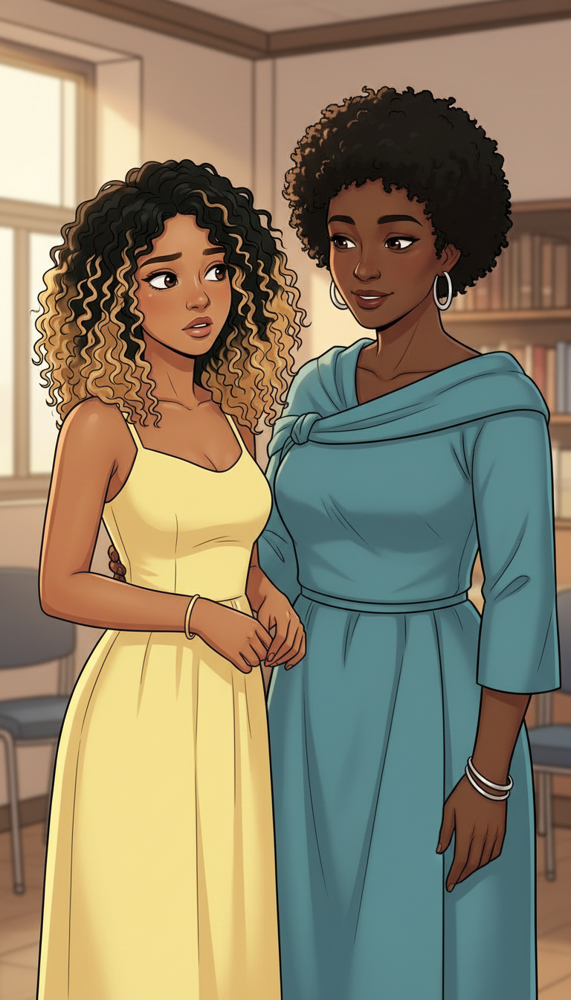
"Un soir, Aïcha m'a posé une question que je n'attendais pas."
Tu voudrais peut-être... témoigner ? Pas maintenant. Quand tu seras prête.
Témoigner... pour que d'autres ne vivent pas ça ?
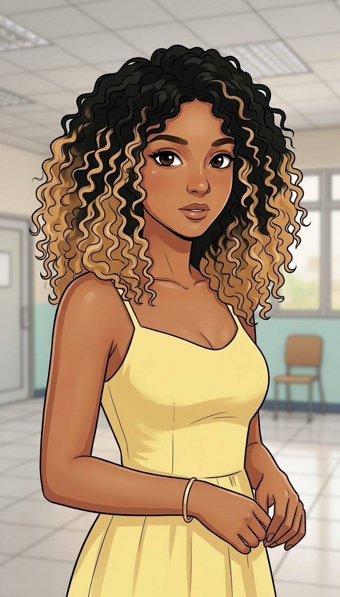
"J'ai réfléchi longtemps. Est-ce que j'étais prête à raconter ? Est-ce que c'était à moi de le faire ?"
Si mon histoire peut éviter ça à une seule personne...
Oui. Je veux le faire.
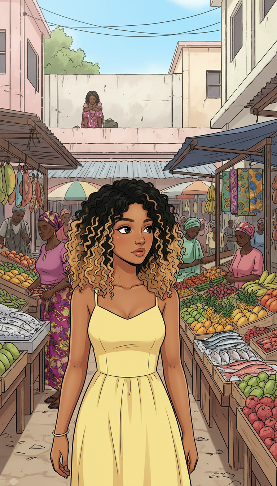
"Trois mois plus tard. Je suis retournée au marché. Et je l'ai vue."
Ce regard... ce vide dans les yeux. Je le connais.
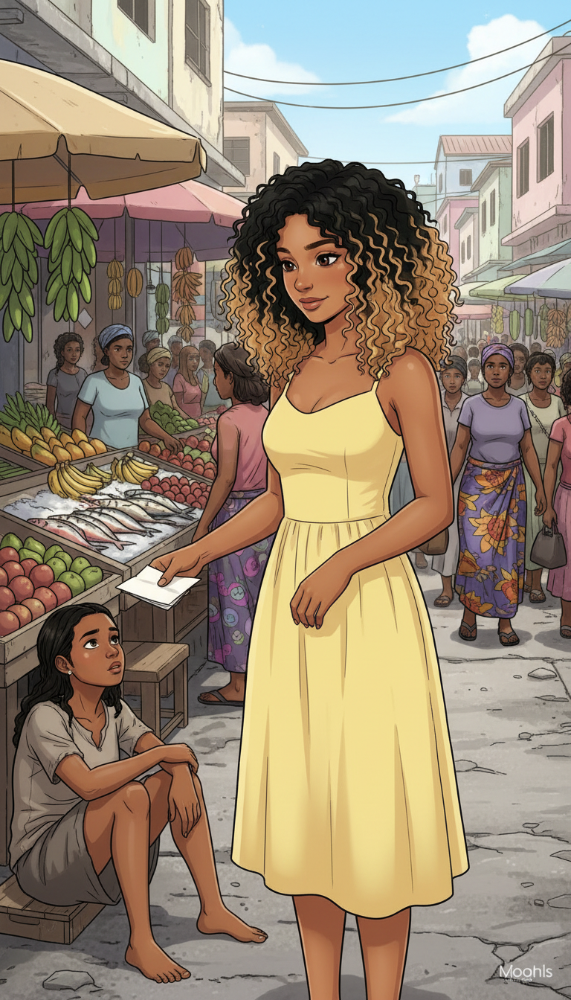
"Je n'ai pas hésité."
Tiens. Appelle ce numéro. N'attends pas.
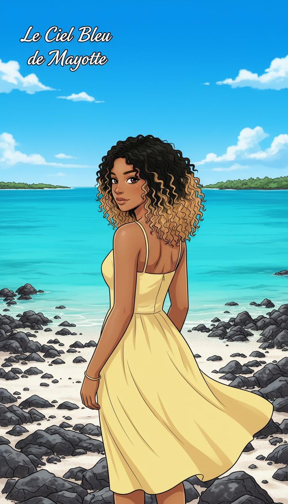
"Le ciel bleu de Mayotte. Il avait toujours été là. Je réapprenais, enfin, à lever les yeux."
Si toi ou quelqu'un que tu connais est en danger :
PSP Mayotte — Aide aux jeunes : 02 69 61 XX XX
En cas d'urgence : 17 (Police) / 15 (SAMU) / 119 (Enfance en danger)